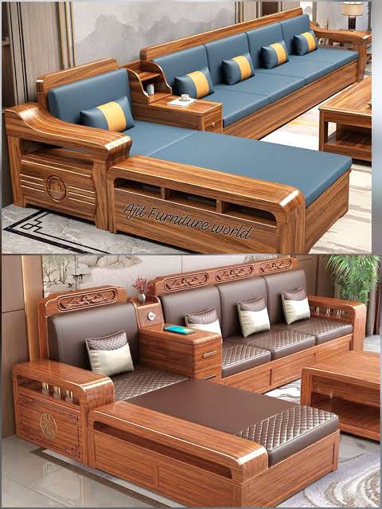

Handcrafted Furniture Built to Last
We build custom solid-wood beds, dining tables, doors, and office desks tailored to your exact room measurements.
Welcome to Abay Woodwork. Unlike mass-produced particleboard furniture that breaks after a few years, every piece we build is cut, joined, and hand-finished from locally sourced, kiln-dried hardwood.
Our Story & Craftsmanship
Founded by local master carpenters right here in our community, Abay Woodwork & Furniture Workshop was built on a simple belief: furniture should be made once and built to last a lifetime. In a market flooded with mass-produced particleboard and thin plastic veneers that chip and sag after just a few seasons, we stay committed to the timeless durability of solid, locally sourced hardwood. Every plank of Wanza, Tid, and Mahogany that enters our workshop is carefully inspected and properly seasoned to ensure it withstands changing weather without warping, splitting, or losing its natural strength.
When you commission a piece from us, you are working directly with the craftspeople who will measure, cut, join, and finish your furniture by hand. We take the time to understand your home or office space—whether you need a heavy-duty six-seater dining table for family gatherings, a custom-fitted wardrobe for a small bedroom, or a carved solid-wood entrance door. Instead of relying on weak staples or cheap glue, our builders use traditional mortise-and-tenon joinery paired with four-stage hand sanding and protective natural finishes, resulting in smooth, heirloom-quality pieces you can be proud to pass down.



Simple Wood Care Tips
- Wipe dust weekly using a dry, soft cotton cloth.
- Keep solid wood furniture away from direct midday sunlight to prevent fading.
- Use coasters under hot cups and wet glasses to protect the varnish finish.
- Apply natural beeswax polish once every six months.